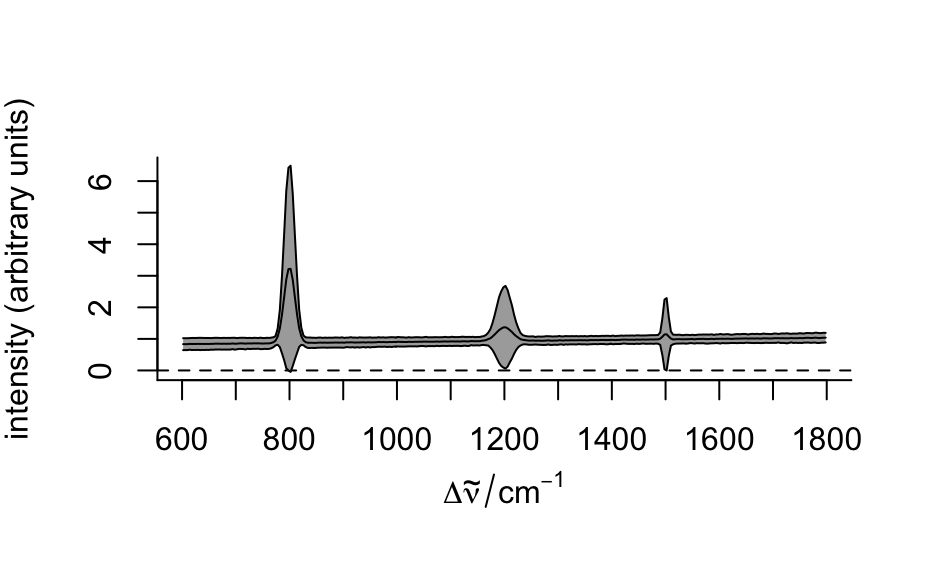

link[base]{scale}s the spectra matrix. scale (x, scale = FALSE) centers the data.
# S4 method for hyperSpec
scale(x, center = TRUE, scale = TRUE)
Arguments
| x |
the hyperSpec object |
| center |
if TRUE, the data is centered to colMeans (x), FALSE
suppresses centering. Alternatively, an object that can be converted to numeric of length
nwl (x) by as.matrix (e.g. hyperSpec object containing 1 spectrum) can
specify the center spectrum. |
| scale |
if TRUE, the data is scaled to have unit variance at each wavelength,
FALSE suppresses scaling. Alternatively, an object that can be converted to numeric of
length nwl (x) by as.matrix (e.g. hyperSpec object containing 1 spectrum)
can specify the center spectrum. |
Value
the centered & scaled hyperSpec object
Details
Package scale provides a fast alternative for base::scale
See also
Author
C. Beleites
Examples
